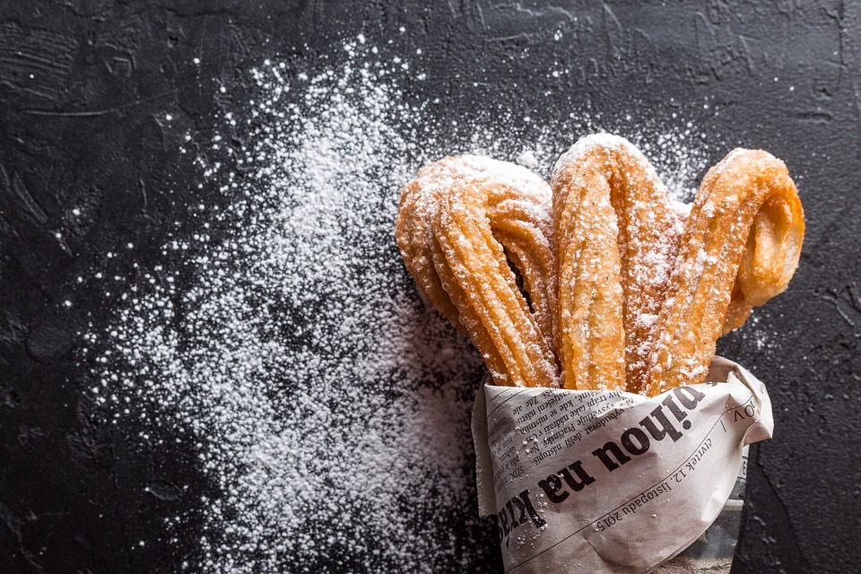

Churros Playground

"churros in their natural playground"
Now comes the question: what is a Churro?
A "Churro" is a type of fried dough from Spanish and Portuguese cuisine,
made with choux pastry dough piped into hot oil with a piping
bag and large closed star tip or similar shape.
The matter of churros "where it all begins"
(aka the ingredients)
- 2 quarts vegetable oil for frying
- 1 cup water
- ½ cup margarine
- 1 cup all-purpose flour
- ¼ teaspoon salt
- 3 eggs
- ¼ cup white sugar
- ¼ teaspoon ground cinnamon